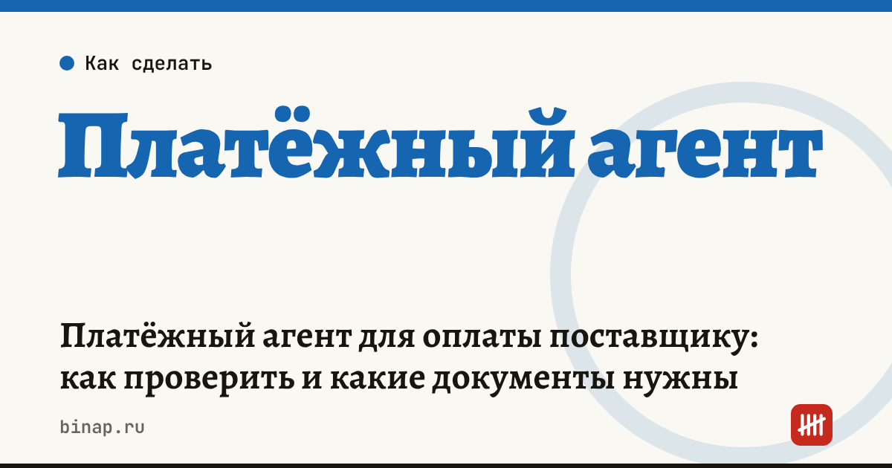

Платёжный агент для оплаты поставщику: как проверить

Платёжный агент переводит деньги зарубежному поставщику за вас, когда прямой платёж из российского банка невозможен или слишком долгий. Главный риск — деньги ушли агенту, а поставщик их не получил. Поэтому агента проверяют как контрагента, а в договоре прописывают срок перевода, курс, комиссию, подтверждение зачисления и возврат денег, если перевод не прошёл.
Коротко
- Агент работает по агентскому договору: действует по вашему поручению и за вознаграждение (гл. 52 ГК).
- Проверьте агента: регистрацию, возраст, суды, отзывы импортёров.
- В договоре — срок перевода, курс и момент его фиксации, комиссия, подтверждение зачисления, возврат.
- Сравнивайте полную стоимость: комиссия + разница курса + расходы банков.
- Сохраняйте все документы: они понадобятся для валютного контроля, таможни и учёта.
Сроки, изменения и разборы для ИП и самозанятых — каждое утро в Telegram и MAX. Подпишитесь, чтобы не пропустить.
8 пунктов проверки агента
- [ ] Компания зарегистрирована в России, есть выписка из ЕГРЮЛ.
- [ ] Работает больше года, без недавней смены директора и адреса.
- [ ] Нет крупных исков от клиентов и долгов у приставов.
- [ ] Есть отзывы импортёров, которые работают с ним не первый месяц.
- [ ] Агент выдаёт подтверждение перевода (SWIFT-сообщение или аналог) и отчёт агента.
- [ ] Курс и комиссия известны до оплаты, а не «по факту».
- [ ] Договор прописывает возврат денег, если перевод не дошёл.
- [ ] Можно сделать первый перевод на небольшую сумму.
Как проверить любую компанию по открытым данным — проверка контрагента.
Что прописать в агентском договоре
| Пункт | Зачем |
|---|---|
| Поручение: кому, сколько, по какому инвойсу | чтобы деньги ушли нужному поставщику |
| Срок перевода | чтобы понимать, когда требовать возврат |
| Курс и момент его фиксации | чтобы не было сюрпризов |
| Вознаграждение агента | полная стоимость услуги |
| Подтверждение зачисления | доказательство оплаты для поставщика и таможни |
| Отчёт агента | документ для учёта |
| Возврат при неисполнении | срок и порядок возврата денег |
Как сравнить стоимость
Пример (расчёт редакции, цифры условные). Нужно оплатить поставщику $20 000, курс ЦБ — 82,5 ₽.
| Агент А | Агент Б | |
|---|---|---|
| Курс агента | 84,0 ₽ | 83,2 ₽ |
| Комиссия | 1% | 2% |
| Стоимость в рублях | 20 000 × 84,0 = 1 680 000 ₽ | 20 000 × 83,2 = 1 664 000 ₽ |
| Комиссия в рублях | 16 800 ₽ | 33 280 ₽ |
| Итого | 1 696 800 ₽ | 1 697 280 ₽ |
Комиссия у агента Б вдвое выше, но за счёт курса итог почти одинаковый. Сравнивайте итоговую сумму в рублях. Как учесть эти расходы в себестоимости — в калькуляторе себестоимости импорта.
Документы
Контракт с поставщиком, инвойс, агентский договор, поручение, подтверждение перевода, отчёт агента. Что нужно банку при валютных операциях — в статье валютный контроль для ИП. Как защититься от скачков курса — валютные форварды для импортёров.
Все материалы — в разделе «Импортёрам».
Частые вопросы
Чем платёжный агент отличается от банковского перевода? Агент переводит деньги поставщику от своего имени или через свои счета по вашему поручению. Перевод через банк — прямой платёж с вашего счёта.
Нужен ли валютный контроль при оплате через агента? Требования зависят от схемы и суммы. Уточните у своего банка до первого платежа.
Что делать, если поставщик не получил деньги? Запросите у агента подтверждение перевода и, если срок по договору прошёл, — возврат по условиям договора.